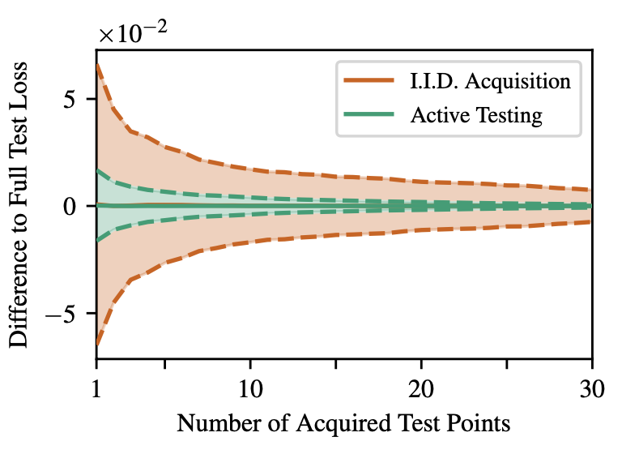
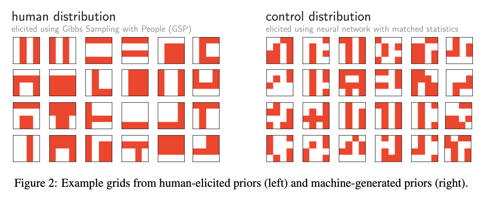

This is the Machine learning and Statistics Journal Club. We gather roughly every third week.
In this paper we propose a new framework for learning from large scale datasets based on iterative learning from small mini-batches. By adding the right amount of noise to a standard stochastic gradient optimization algorithm we show that the iterates will converge to samples from the true posterior distribution as we anneal the stepsize. This seamless transition between optimization and Bayesian posterior sampling provides an inbuilt protection against overfitting. We also propose a practical method for Monte Carlo estimates of posterior statistics which monitors a “sampling threshold” and collects samples after it has been surpassed. We apply the method to three models: a mixture of Gaussians, logistic regression and ICA with natural gradients.
Presenter: Isac Boström
Recent few-shot methods, such as parameter-efficient fine-tuning (PEFT) and pattern exploiting training (PET), have achieved impressive results in label-scarce settings. However, they are difficult to employ since they are subject to high variability from manually crafted prompts, and typically require billion-parameter language models to achieve high accuracy. To address these shortcomings, we propose SetFit (Sentence Transformer Fine-tuning), an efficient and prompt-free framework for few-shot fine-tuning of Sentence Transformers (ST). SetFit works by first fine-tuning a pretrained ST on a small number of text pairs, in a contrastive Siamese manner. The resulting model is then used to generate rich text embeddings, which are used to train a classification head. This simple framework requires no prompts or verbalizers, and achieves high accuracy with orders of magnitude less parameters than existing techniques. Our experiments show that SetFit obtains comparable results with PEFT and PET techniques, while being an order of magnitude faster to train. We also show that SetFit can be applied in multilingual settings by simply switching the ST body. Our code is available at this https URL and our datasets at this https URL .
Presenter: Andreas Östling
In computational social science (CSS), researchers analyze documents to explain social and political phenomena. In most scenarios, CSS researchers first obtain labels for documents and then explain labels using interpretable regression analyses in the second step. One increasingly common way to annotate documents cheaply at scale is through large language models (LLMs). However, like other scalable ways of producing annotations, such surrogate labels are often imperfect and biased. We present a new algorithm for using imperfect annotation surrogates for downstream statistical analyses while guaranteeing statistical properties—like asymptotic unbiasedness and proper uncertainty quantification—which are fundamental to CSS research. We show that direct use of surrogate labels in downstream statistical analyses leads to substantial bias and invalid confidence intervals, even with high surrogate accuracy of 80-90%. To address this, we build on debiased machine learning to propose the design-based supervised learning (DSL) estimator. DSL employs a doubly-robust procedure to combine surrogate labels with a smaller number of high-quality, gold-standard labels. Our approach guarantees valid inference for downstream statistical analyses, even when surrogates are arbitrarily biased and without requiring stringent assumptions, by controlling the probability of sampling documents for gold-standard labeling. Both our theoretical analysis and experimental results show that DSL provides valid statistical inference while achieving root mean squared errors comparable to existing alternatives that focus only on prediction without inferential guarantees.
Presenter: Hannes Waldetoft
Forensic age estimation generally involves considerable amounts of uncertainty. Forensic age indicators such as teeth or skeleton images predict age only approximately, and this is likely to remain true even for future forensic age indicators. Thus, forensic age assessment should aim to make the best possible decisions under uncertainty. In this paper, we apply mathematical theory to make statistically optimal decisions to age assessment. Such an application is fairly straightforward assuming there is a standardized procedure for obtaining age indicator information from individuals, assuming we have data from the application of this procedure to a group of persons with known ages, and assuming the starting point for each individual is a probability distribution describing prior knowledge about the persons age. The main problem is then to obtain such a prior. Our analysis indicates that individual priors rather than a common prior for all persons may be necessary. We suggest that caseworkers, based on individual case information, may select a prior from a menu of priors. We show how information may then be collected over time to gradually increase the robustness of the decision procedure. We also show how replacing individual prior distributions for age with individual prior odds for being above an age limit cannot be recommended as a general method. Our theoretical framework is applied to data where the maturity of the distal femur and the third molar is observed using MRI. As part of this analysis we observe a weak positive conditional correlation between maturity of the two body parts.
Presenter: Isac Boström
We propose a method for producing ensembles of predictors based on holdout estimations of their generalization performances. This approach uses a prior directly on the performance of predictors taken from a finite set of candidates and attempts to infer which one is best. Using Bayesian inference, we can thus obtain a posterior that represents our uncertainty about that choice and construct a weighted ensemble of predictors accordingly. This approach has the advantage of not requiring that the predictors be probabilistic themselves, can deal with arbitrary measures of performance and does not assume that the data was actually generated from any of the predictors in the ensemble. Since the problem of finding the best (as opposed to the true) predictor among a class is known as agnostic PAC-learning, we refer to our method as agnostic Bayesian learning. We also propose a method to address the case where the performance estimate is obtained from k-fold cross validation. While being efficient and easily adjustable to any loss function, our experiments confirm that the agnostic Bayes approach is state of the art compared to common baselines such as model selection based on k-fold cross-validation or a linear combination of predictor outputs.
Presenter: Väinö Yrjänäinen
Due to the non-randomized nature of real-world data, prognostic factors need to be balanced, which is often done by propensity scores (PSs). This study aimed to investigate whether autoencoders, which are unsupervised deep learning architectures, might be leveraged to compute PS.
Presenter: Chamika Porage

We present the first deep learning model to successfully learn control policies directly from high-dimensional sensory input using reinforcement learning. The model is a convolutional neural network, trained with a variant of Q-learning, whose input is raw pixels and whose output is a value function estimating future rewards. We apply our method to seven Atari 2600 games from the Arcade Learning Environment, with no adjustment of the architecture or learning algorithm. We find that it outperforms all previous approaches on six of the games and surpasses a human expert on three of them.
Presenter: Andreas Östling
We introduce a new class of time-continuous recurrent neural network models. Instead of declaring a learning system’s dynamics by implicit nonlinearities, we construct networks of linear first-order dynamical systems modulated via nonlinear interlinked gates. The resulting models represent dynamical systems with varying (i.e., liquid) time-constants coupled to their hidden state, with outputs being computed by numerical differential equation solvers. These neural networks exhibit stable and bounded behavior, yield superior expressivity within the family of neural ordinary differential equations, and give rise to improved performance on time-series prediction tasks. To demonstrate these properties, we first take a theoretical approach to find bounds over their dynamics and compute their expressive power by the trajectory length measure in latent trajectory space. We then conduct a series of time-series prediction experiments to manifest the approximation capability of Liquid Time-Constant Networks (LTCs) compared to classical and modern RNNs.
Presenter: Jakob Torgander

Abstract: Incorrect labels in training data occur when human annotators make mistakes or when the data is generated via weak or distant supervision. It has been shown that complex noise-handling techniques - by modeling, cleaning or filtering the noisy instances - are required to prevent models from fitting this label noise. However, we show in this work that, for text classification tasks with modern NLP models like BERT, over a variety of noise types, existing noisehandling methods do not always improve its performance, and may even deteriorate it, suggesting the need for further investigation. We also back our observations with a comprehensive analysis.
Presenter: Hannes Waldetoft

Abstract: We introduce a new framework for sample-efficient model evaluation that we call active testing. While approaches like active learning reduce the number of labels needed for model training, existing literature largely ignores the cost of labeling test data, typically unrealistically assuming large test sets for model evaluation. This creates a disconnect to real applications, where test labels are important and just as expensive, eg for optimizing hyperparameters. Active testing addresses this by carefully selecting the test points to label, ensuring model evaluation is sample-efficient. To this end, we derive theoretically-grounded and intuitive acquisition strategies that are specifically tailored to the goals of active testing, noting these are distinct to those of active learning. As actively selecting labels introduces a bias; we further show how to remove this bias while reducing the variance of the estimator at the same time. Active testing is easy to implement and can be applied to any supervised machine learning method. We demonstrate its effectiveness on models including WideResNets and Gaussian processes on datasets including Fashion-MNIST and CIFAR-100.
Presenter: Väinö Yrjänäinen

Abstract: Strong inductive biases give humans the ability to quickly learn to perform a variety of tasks. Although meta-learning is a method to endow neural networks with useful inductive biases, agents trained by meta-learning may sometimes acquire very different strategies from humans. We show that co-training these agents on predicting representations from natural language task descriptions and programs induced to generate such tasks guides them toward more human-like inductive biases. Human-generated language descriptions and program induction models that add new learned primitives both contain abstract concepts that can compress description length. Co-training on these representations result in more human-like behavior in downstream meta-reinforcement learning agents than less abstract controls (synthetic language descriptions, program induction without learned primitives), suggesting that the abstraction supported by these representations is key.
Presenter: Isac Boström
Abstract: Cryptocurrencies, such as Bitcoin, are one of the most controversial and complex technological innovations in today’s financial system. This study aims to forecast the movements of Bitcoin prices at a high degree of accuracy. To this aim, four different Machine Learning (ML) algorithms are applied, namely, the Support Vector Machines (SVM), the Artificial Neural Network (ANN), the Naive Bayes (NB) and the Random Forest (RF) besides the logistic regression (LR) as a benchmark model. In order to test these algorithms, besides existing continuous dataset, discrete dataset was also created and used. For the evaluations of algorithm performances, the F statistic, accuracy statistic, the Mean Absolute Error (MAE), the Root Mean Square Error (RMSE) and the Root Absolute Error (RAE) metrics were used. The t test was used to compare the performances of the SVM, ANN, NB and RF with the performance of the LR. Empirical findings reveal that, while the RF has the highest forecasting performance in the continuous dataset, the NB has the lowest. On the other hand, while the ANN has the highest and the NB the lowest performance in the discrete dataset. Furthermore, the discrete dataset improves the overall forecasting performance in all algorithms (models) estimated.
Presenter: Sahika Gökmen